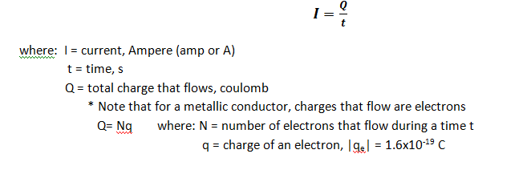
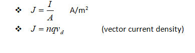
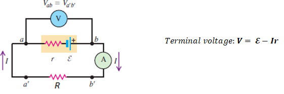

CURRENT, RESISTANCE AND ELECTROMOTIVE FORCE
-
Electric Current
- • charges in motion
- • the rate of flow of electric charge through a conductor connected between two points of different potentials
- 
Direction of Current
Current in Relation to the Drift Velocity of the Charges
Current Density in a Conductor, J
- • It is the current per unit cross-sectional area.
- 
-
Resistivity and Resistance
- Resistivity, ρ
- • The quantitative measure of a material’s opposition to the flow of current. It is an intrinsic property of the material (metal element) which depends only (if temperature is constant) on the chemical composition of the material and temperature, not its shape or size.
- • Good conductors have small resistivity; good insulators have large resistivity.
- • The resistivity of a material is the ratio of the magnitudes of electric field and current density.
Resistance, R
- • It is the obstruction or opposition offered by the material (conductor) in the flow of current through it. It is the extrinsic property of the material which depends upon the amount of material present (shape and size).
- Ohm’s law is an assertion that the current I through a device is always directly proportional to the potential difference V applied to the device. The ratio of V to I is constant:
- • The resistance of a cylindrical conductor is related to its resistivity , length , and cross-sectional area
Temperature Dependence of Resistivity
- • The resistivity increases when the temperature increases except for some materials like carbon
-
Electromagnetic Force, emf or ℰ
- Resistivity, ρ
- • Not a force but an energy-per-unit-charge quantity that is imparted by an energy source.
- • It is the influence that makes current flow from lower to higher potential.
- • Sources may be batteries, electric generators, or any kind of cells.
- A Source on Open Circuit and in a Closed or Complete Circuit
- 1. Open circuit: no current flows
- 2. Closed circuit:
- a. Current flows out from the source (Discharging Source)

- b. Current flows into the source (Charging Source)
Electrical Power and Energy in Circuits
- • Power, P: time rate of energy transfer
- • Energy Transfer:
-
Sample Problems
- 1. A steady current of 2.5 A exists in a wire for 4.0 min. (a) How much total charge passed by a given point in the circuit during those 4.0 min? (b) How many electrons would this be?
- 2. A 200-km-long high-voltage transmission line 2 cm in diameter carries a steady current of 1000 A. If the conductor is copper with a free charge density of 8.50 x 1028 electrons per cubic meter, how many years does it take one electron to travel the full length of the cable?
- 3. An 18-gauge copper wire (ρ = 1.72x10-8 Ω.m) has a diameter of 1.02 mm and a cross-sectional area of 8.20x10-7m2. It carries a current of 1.67 A. Find (a) the electric-field magnitude in the wire; (b) the potential difference between two points in the wire 50m apart; (c) the resistance of a 50m length of this wire.
- 4. A certain lightbulb has a tungsten filament with a resistance of 19 V when at 20°C and 140 V when hot. Assume the resistivity of tungsten varies linearly with temperature even over the large temperature range involved here. Find the temperature of the hot filament. (αTungsten = 4.5 x 10-3/OC)
- 5. When an external resistance of 10 ohms is connected to a source, a current of 0.5A flows, when the resistance is changed to 20 ohms, the current becomes 0.3 amperes. What are the open circuit emf and the internal resistance of the source?